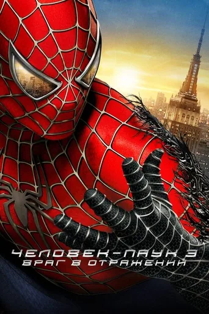

Человек-паук 3: Враг в отражении 2007
Прошло пять лет с тех пор, как Питер осознал, что «с Великой силой приходит Великая ответственность!», и три года с тех пор, как он отказался быть борцом за справедливость. Но сейчас кажется, Питер прекрасно научился жить несколькими жизнями. Он хорошо учится, Нью-Йорк признал его героем, отношения с Мэри Джейн прочные. Питер даже намеревается сделать ей предложение! Но к сожалению, его лучший друг Гарри Озборн по-прежнему считает, что именно Человек-паук несет ответственность за безвременную кончину его отца. Гарри намеревается отомстить ему в образе Нового Гоблина. В то же самое время на криминальной сцене Нью-Йорка появляется другой могущественный суперзлодей, известный как Песочный Человек. Когда Человек-паук надевает таинственный черный костюм, его темная, более мстительная сторона полностью поглощает его. Эти трансформации заставляют его встретиться с самым сильным противником ― с самим собой…
Открыть в каталогеДанные и постеры принадлежат их правообладателям. Этот продукт использует TMDB API, но не одобрен и не сертифицирован TMDB.